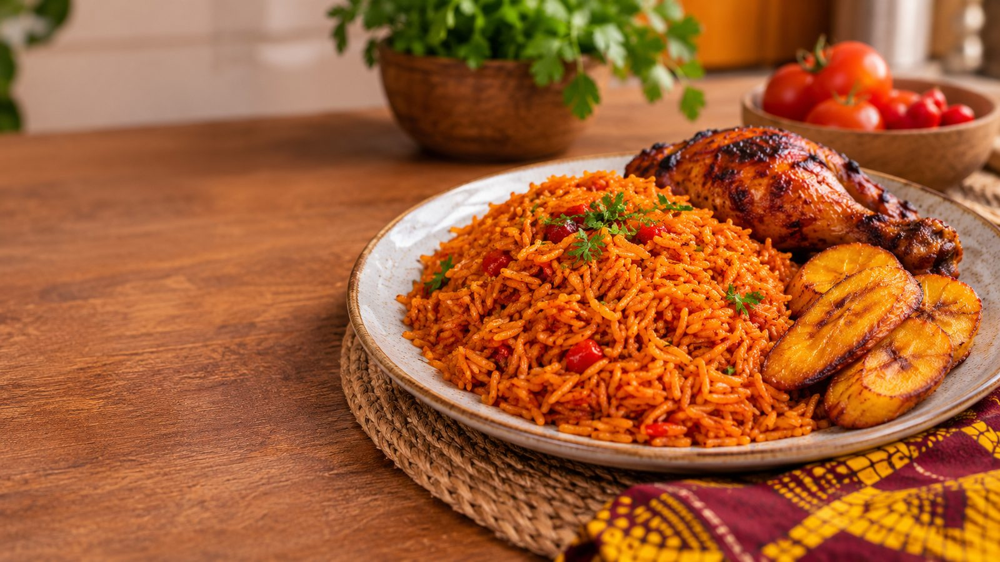

LDT 502 · Online Instructional Module
JOLLOF 101
A West African Culinary Learning Experience
Welcome! Food tells stories about history, place, family and community. In this module you will explore West African cuisine, discover Jollof traditions, and prepare a Nigerian-style Jollof rice yourself.

Learning goal
Learning goal
“Given the selected Nigerian Jollof rice recipe, required ingredients, and standard home-kitchen equipment, the learner will prepare Jollof rice by completing all critical preparation and cooking steps in the appropriate sequence and producing a finished dish that meets the established food-safety, doneness, texture, appearance, and flavor criteria.”
Your learning journey
- EXPLORE
West African Cuisine
Section 1 · 6 short pages
- DISCOVER
Jollof Traditions
Section 2 · 8 short pages
- PREPARE
Nigerian Jollof Rice
Section 3 · 10 short pages
Before you begin
- How it works: complete the sections in order using Next →. A page is marked ✓ Viewed only after you reach its end.
- You’ll need: a phone, tablet or computer with internet. Cooking ingredients and equipment come in Section 3.
- About Jollof: there is no single recipe for every community. You will cook one Nigerian-style version.